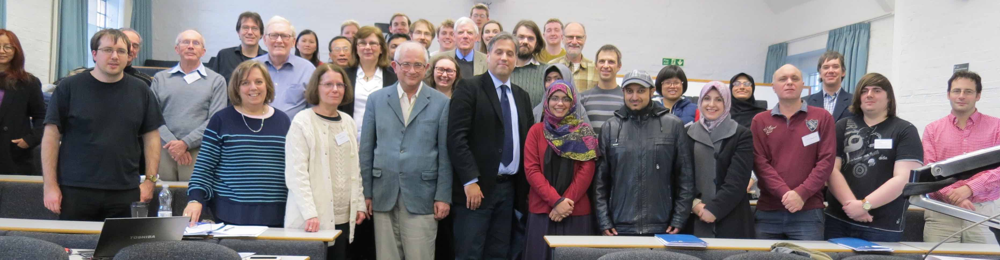

This is an archive of all previous NBSAN activities.
39
The thirty-ninth NBSAN meeting was held in Durham on Monday 15th December 2025, organised by Max Gadouleau. The speakers were:
38
The thirty-eighth NBSAN meeting was held in St Andrews on Thursday 12th and Friday 23th June 2025, organised by Jung Won Cho. Full details are on the meeting webpage. The speakers were:
- Gemma Crowe - Twisted right-angled Artin groups
- Levent Dasar - Finitely right equated semigroups
- James East - Transformation representations of diagram monoids ( slides )
- Joseph Edwards - Finite presentations for quotients of plactic-like monoids
- Victoria Gould - Finitary conditions for graph products ( slides )
- Yann Péresse - Topologies on the symmetric inverse monoid ( slides )
- Catherine Reilly - Membership problems for two-generator one-relator groups and inverse monoids
- Nóra Szakács - Inverse semigroups with bounded group distortion
37
The thirty-seventh NBSAN meeting took place in Manchester on Friday 11th April, organised by Josiah Aakre, Thomas Aird and Daniel Heath. The speakers were:
36
The thirty-sixth NBSAN meeting was held in Manchester on Thursday 20th and Friday 21st June 2024, as a satellite to the 75th British Mathematical Colloquium (which also featured a Semigroups Workshop). The meeting and workshop were organised by Marianne Johnson, Mark Kambites, Dmitry Kudryavtsev, Alex Levine and Nóra Szakács. Financial support was kindly provided by the London Mathematical Society, Heilbronn Institute for Mathematical Research, the Engineering and Physical Sciences Research Council and the Department of Mathematics at the University of Manchester. The NBSAN speakers were:
- Thomas Aird - The meet-stalactic and meet-taiga monoid ( | slides )
- Matthew Brookes - Congruences on direct products of simple semigroups ( | slides )
- Tara Macalister Brough - Preserving self-similarity in free products of semigroups ( )
- Igor Dolinka - Prefix monoids of groups and right units of special inverse monoids ( | slides )
- Luna Elliott - E-disjunctive inverse semigroups ( )
- Herman Goulet-Ouellet - Profinite bridges between semigroup theory and symbolic dynamics ( )
- Ganna Kudryavtseva - Duality theory for Boolean right restriction semigroups ( | slides )
- António Malheiro - Quasi-crystals and algebraic structures: linking cyrstal bases to semigroups and beyond ( | slides )
- Itamar Stein - The algebra of the monoid of order-preserving functions and other reduced E-Fountain semigroups ( | slides )
- Tim Stokes - Can constellations shed light on semigroups? ( | slides )
- Jan Philipp Wächter - Decision problems for automaton semigroups and groups ( | slides )
- Magdalena Wiertel - Hecke-Kiselman monoids and algebras ( | slides )
35
The thirty-fifth NBSAN meeting was held in York on Friday 17th November 2023, organised by Craig Miller. The speakers were:
- Peter Faul - Fibrational approaches to Clifford Semigroups ( )
- Robert Gray - Symmetries of Schützenberger graphs and subgroups of special inverse monoids ( )
- Jung Won Cho - Subsemigroups of the free monogenic inverse semigroup ( )
- Robert Kropholler - Multiple context-free groups are closed under free products ( )
- Catarina Monteiro - Formations and i-Fitting classes of inverse semigroups, congruences and languages ( )
- Nasir Sohail - Amalgamating inverse semigroups over ample semigroups ( )
34
The thirty-fourth NBSAN meeting was held in Norwich on Thursday 15th and Friday 16th June 2023, organised by Robert D. Gray and Islam Foniqi, and with a focus on decision problems in group and monoid theory. Full details are on the dedicated meeting webpage. The speakers were:
- María Cumplido Cabello - Solving the word problem in Artin groups without braid relations
- Laure Daviaud - Some applications of semigroup theory in formal verification
- Lorna Gregory - Representation type and decidability of theories of modules of finite-dimensional algebras
- Martin Hampenberg Christensen - Submonoids of the symmetric inverse monoid
- Alan Logan - Post's correspondence problem in group theory
- Carl-Fredrik Nyberg Brodda - One relator, many problems
- Igor Potapov - Matrix semigroups, equations and linear maps
- Daniel Turaev - Deciding the first order theory of the plactic monoid
33
The thirty-third NBSAN meeting was held in Manchester on Friday 14th April 2023, organised by Mark Kambites and Nóra Szakács. The speakers were:
- Ruy Exel - The tight \(C^*\)-algebra of an inverse semigroup ( )
- Islam Foniqi - Decision problems for one-relator monoids and groups ( | slides )
- Victoria Gould - Pseudo-finite semigroups and diameter ( | slides )
- Mark Kambites - Subgroups of special inverse monoids ( )
- Xin Li - \(C^*\)-algebras and dynamical systems arising from semigroups ( )
32
The thirty-second NBSAN meeting was held in York on Friday 24th June 2022, organised by Victoria Gould and in conjunction with a workshop on Topics in Geometric Semigroup Theory the same week. The speakers were:
- Fabienne Chouraqui - About Garside monoids and M-braces ( )
- Tom Quinn-Gregson - Minimum degrees of variants of full transformation semigroups ( )
- Stuart Margolis - Translational hulls, combinatorics and discrete geometry ( )
- Xavier Mary - Semigroups with chains of associate idempotents ( )
- Carl-Fredrik Nyberg Brodda - Free products and word-hyperbolic monoids ( )
- (Itamar Stein was also invited to speak but was sadly unable to attend; he has kindly made his slides available.)
31
The thirty-first NBSAN meeting was a "Young NBSAN" organised by and with a special focus on early career researchers. It was held in Manchester on 25th March 2022, organised by Thomas Aird, Daniel Heath, Dmitry Kudryavtsev, Carl-Fredrik Nyberg Brodda and Georgia Schneider. The speakers were:
- Thomas Aird - Semigroup identities in tropical matrices
- Ashley Clayton - Counting subdirect powers of finite commutative semigroups (slides)
- Ambroise Grau - Translational hulls and isomorphisms with endomorphism monoids
- Craig Miller - The \( \mathcal{R} \)-height of semigroups and their bi-ideals (slides)
- Nik Ruškuc - Direct and subdirect products in combinatorial semigroup theory (slides)
- Georgia Schneider - Semigroups of inverse quotients (slides)
- Maria Tsalakou - Computing congruences of finitely presented semigroups
- Bill de Witt - The number of subdirect powers of unary algebras
In Summer 2021 we hosted some another short series of "eNBSAN" seminars:
- 14th July - James East - Congruences of twisted partition monoids ( )
- 21st July - Student Talks Session:
- Alex Levine - Describing solutions to equations using EDT0L languages ( )
- Georgia Schneider - Semigroups of left I-quotients ( )
- Maria Tsalakou - Computational methods for small overlap monoids ( )
- 28th July - António Malheiro - Identities in plactic-like monoids: a crystal approach ( )
In September 2020 we hosted a series of online expository lectures by Ashley Clayton (St Andrews) on "Direct and Subdirect Products in Groups, Semigroups and Algebras". The series, which was aimed chiefly at PhD students, was generously supported by an extra grant from the London Mathematical Society. You can access:
- Videos of the Lectures (on the LMS Youtube channel).
- Ashley's Lecture Notes
- Thomas Aird - Permutability of tropical matrices
- Carl-Fredrik Nyberg Brodda - The word problem for special monoids
- Scott Carson - Right ideal Howson semigroups
- Bill De Witt - Residual finiteness of monounary algebras and their direct products
- Luke Elliot - Automorphisms of the Brin-Thompson groups nV
- Ambroise Grau - The translational hull of an "almost completely zero-simple" ideal in an independence algebra
- Veronica Kelsey - Base sizes of permutation groups
- Finn Smith - Computing finite semigroups
To conclude the series we held a special eNBSAN seminar on 7th October, following on from the topic of Ashley's lectures:
- Wolfram Bentz - Direct and Subdirect Products in Groups, Semigroups and Algebras - Congruences of Direct Products
In Summer 2020, in place of physical meetings cancelled due to the COVID-19 pandemic, we held a series of online eNBSAN Seminars:
- 24th June - Igor Dolinka - The prefix membership problem for one-relator groups, and its semigroup-theoretical cousins ( | slides )
- 1st July - Stuart Margolis - Degree 2 Transformation Semigroups as Continuous Maps on Graphs: Foundations and Structure ( | slides )
- 8th July - Yingying Feng - Min network of congruences on an inverse semigroup ( | slides )
- 15th July - Robert Gray - Solving equations in one-relator monoids ( | slides )
- 22nd July - Benjamin Steinberg - Homological finiteness of one-relator monoids and related monoids ( | slides )
- 29th July - Marianne Johnson - Tropical representations and identities of plactic monoids ( | slides )
30
The thirtieth meeting was held in Manchester on 12th July 2019, organised by Marianne Johnson and Mark Kambites. The speakers were:
- James East - Semigroups generated by idempotents and one-sided units (slides)
- Bakh Khoussainov - Open questions on automatic structures (joint talk with Manchester Pure Mathematics Colloquium and LMS Aitken Lecture) (slides)
- Finn Smith - Translational hulls of ideals (slides)
- Nóra Szakács - Inverse monoids and immersions of cell complexes (slides)
29
The twenty-ninth meeting was held in York on 10th and 11th January 2019, organised by Victoria Gould. The speakers were:
- Wolfram Bentz - The existential transversal property and its impact on the regularity of finite transformation semigroups
- Matthew Brookes - The lattice of left congruences on an inverse semigroup
- Scott Carson - The Howson property for one-sided ideals of a semigroup (slides)
- Laura Ciobanu - Solving equations in semigroups and groups
- Fernando Flores Brito - Congruences on End Fn(G) (slides)
- Robert Gray - A Lyndon's identity theorem for one-relator monoids
- Peter Hines - Card shuffles and Cantor space: an inverse semigroup perspective (slides)
- Marianne Johnson - Tropical matrix fountains
- Dandan Yang - Semigroups with finitely generated universal left congruence (slides)
28
The twenty-eighth NBSAN meeting was held in St Andrews on 14th and 15th June 2018, as a satellite meeting to the 2018 British Mathematical Colloquium. The organisers were Markus Pfeiffer and Nik Ruškuc. The speakers were:
- Tara Brough - Two applications of monoid actions to cross-sections
- Tom Coleman - Generation of intermediate and partial map monoids of first-order structures (slides)
- James East - Sandwich semigroups in locally small categories
- Justine Falque - The orbit algebra of oligomorphic permutation groups with polynomial profile - proof of a conjecture of Cameron (slides)
- Florent Hivert - The 0-rook monoid and its friends (slides)
- Marianne Johnson - Unitriangular matrix varieties
- Itamar Stein - The global dimension of the algebra of the monoid of all partial functions on an n-set (slides)
27

The twenty-seventh meeting was held in York on 7th and 8th January 2018, organised by Victoria Gould and Rida-E Zenab, and in honour of the 70th birthday of László Márki. Above is a group photo. The speakers were:
{kind=link}
- Ashley Clayton - Subdirect products of free semigroups (slides)
- Igor Dolinka - Universal locally finite maximally homogeneous semigroups (slides)
- Victoria Gould - Coherency and purity for monoids (slides)
- Tatiana Jajcayová - Inverse semigroups of partial automorphisms of combinatorial structures: report on recent progress
- Valdis Laan - Morita equivalence for factorizable semigroups
- László Márki - Morita equivalence of semigroups revisited: firm semigroups (slides)
- John Meakin - Adian groups, semigroups and inverse semigroups
- Craig Miller - Right noetherian semigroups
- P. A. Azeef Muhammed - The cross-connection of the inductive groupoid of a regular semigroup (slides)
- Pham Ngoc Ánh - A generalization of Clifford's theorem (slides)
- Mária B. Szendrei - Extensions and I-semidirect products of inverse semigroups (slides)
- Abdullahi Umar - Some remarks on semigroups of contraction mappings of a finite chain (slides)
- Rida-E Zenab - Pseudo-finite monoids and semigroups (slides)
- Xia Zhang - On injective constructions of S-semigroups
26
The twenty-sixth NBSAN meeting was held in St Andrews on 13th July 2017, organised by Julius Jonusas. The speakers were:
- Nick Gilbert - Extensions and cohomology of inverse semigroups (slides)
- Zur Izhakian - Tropical plactic algebra and semigroup representations
- Mark Kambites - A random walk through random walks (slides)
- Matt McDevitt - Insertion relations on words
- Munazza Naz - Extensions of Green's relations on semigroups of tropical matrices (slides)
25
The twenty-fifth NBSAN meeting took place in York on Wednesday 18th January 2017, organised by Victoria Gould and incorporating a meeting of the York Semigroup. The speakers were:
- Wolfram Bentz (Hull) - Congruences on the product of two full transformation monoids (abstract | slides)
- Tara Brough (Lisbon) - Word problems of free inverse monoids (abstract)
- Julius Jonusas (St Andrews) - Universal words and sequences (abstract | slides)
- Emma McDougall (Heriot-Watt) - Relation modules for inverse monoids
- Stuart Margolis (Bar Ilan) - Projective indecomposable modules and quivers for a class of Fountain monoids with applications to descent algebras (abstract)
- Peter Neumann (Oxford) - Galois and his groups (York Semigroup Talk, abstract)
24
The twenty-fourth NBSAN meeting was held in York on Wednesday 11th May 2016, organised by Victoria Gould and with a focus on semigroup algebras and connections with functional analysis. The speakers were:
- Garth Dales (Lancaster) - Ideals in βS (slides)
- Robert Gray (East Anglia) - Cellular and standardly based semigroup algebras (slides)
- Chris Hollings (Oxford) - A brief history of semigroup representations (slides)
- Mark Kambites (Manchester) - Some conditions related to amenability
- Catarina Santa-Clara (Lisbon) - The semigroup ring of a restriction semigroup with an inverse skeleton (slides)
- Dona Strauss (Leeds) - Idempotents in βS (slides)
23
The twenty-third NBSAN meeting was held in St Andrews on Thursday 17th and Friday 18th March 2016, organised by Markus Pfeiffer. The speakers were:
- Ying-Ying Feng (Foshan and York) - Two kinds of congruence networks on regular semigroups (slides)
- Marianne Johnson (Manchester) - Face monoid actions and tropical hyperplane arrangements
- Mark-Jan Nederhof (St Andrews) - A short proof that O_2 is an MCFL (slides)
- Michael Torpey (St Andrews) - Computing with semigroup congruences (slides)
- Rebecca Waldecker (Martin Luther Halle-Wittenberg) - Applying permutation group theory
- Wilf Wilson (St Andrews) - Computing maximal subsemigroups of finite semigroups (slides)
22
- Peter Fenner (Manchester) - The gossip monoid
- Maximilien Gadouleau (Durham) - Universal simulation of automata networks (slides)
- Stuart Margolis (Bar Ilan) - Poset cohomology, CW decompositions and the global dimension of left regular band algebras (slides)
- James Mitchell (St Andrews) - Semigroups in GAP: theory and practice (joint session with the CoDiMa training school)
- Colva Roney-Dougal (St Andrews) - Relations relating to generation of groups and semigroups
21
The twenty-first NBSAN meeting was held at the University of Essex, in Colchester, on 10th July 2015, organised by Peter Higgins, Alexei Vernitski and Gerald Williams. The speakers were:
- Tara Brough - Automaton semigroups: some new examples and non-examples
- Jack Button (Cambridge) - A summary of recent results on 1-relator groups (abstract)
- Andrew Duncan (Newcastle) - Equations over hyperbolic groups and semigroups (abstract)
- Nick Loughlin (Newcastle) - Understanding idempotents in diagram semigroups and algebras (abstract)
- Esamaldeen Mohamed (Essex) - Isomorphisms amongst cyclically presented groups (abstract)
- Jim Renshaw (Southampton) - Free products and amalgams of pomonoids (abstract)
20
The twentieth NBSAN meeting was held in St Andrews on 22nd and 23rd April 2015, organised by Markus Pfeiffer. Peter Cameron wrote a very nice blog post on the meeting. The speakers were:
- Paul Bell (Loughborough) - Complexity of reachability, mortality and freeness problems for matrix semigroups (slides)
- Tom Bourne (St Andrews) - Tackling the generalised star-height problem (slides)
- Alan Cain (Universidade Nova de Lisboa) - Computations and conjugacy in hypoplactic and sylvester monoids and other homogenous monoids (slides)
- Peter Cameron (St Andrews) - Finding where you are: automata, graph endomorphisms and foldings (slides)
- Rachael Carey (St Andrews) - Graph automatic semigroups (slides)
- Robert Gray (East Anglia) - Crystal monoids (slides)
- Ruth Hoffmann (St Andrews) - Geometric grid permutation classes and regular languages
- Matthew Taylor (Manchester) - A classification of 2-generated T-modules
19
The nineteenth NBSAN meeting was held in York on 14th January 2015, organised by Victoria Gould. Speakers were:
- Lovkush Agarwal (Leeds) - The reducts of the generic digraph
- Bernard Bainson (Heriot-Watt) - Khovanov's presheaf on some ordered groupoids (slides)
- Wolfram Bentz (Lisbon) - New results on synchronization
- Igor Dolinka (Novi Sad) - Variants of semigroups - the case study of finite full transformation monoids (slides)
- Rowena Paget (Kent) - A representation theory approach to the rook monoid (slides)
- Goncalo Pinto (College of the Bahamas) - Residuated completely simple semigroups (slides)
- Tom Quinn-Gregson (York) - ℵ0-categorical semigroups (slides)
- Itamar Stein (Bar-Ilan) - The ordinary quiver of the algebra of the monoid of all partial functions on a set (slides)
18
The eighteeth NBSAN meeting was held in Edinburgh on Monday 21st July 2014, organised by Nick Gilbert. The speakers were:
- Karl Auinger (Vienna) - On the membership problem for pseudovarieties (slides)
- James East (Western Sydney) - Idempotent generators in diagram semigroups (slides)
- Ganna Kudryavtseva (IMFM Ljubljana) - On non-commutative frame theory (slides)
- Laurent Poinsot (Paris Nord XIII) - From combinatorial monoids to algebras, bialgebras and Hopf algebras, functorially (slides)
17
The seventeenth NBSAN meeting was held in Norwich on Monday 14th and Tuesday 15th April 2014, organised by Robert Gray. The speakers were:
- Catarina Carvalho (Hertfordshire) - Constraint satisfaction problems and dualities (slides)
- Cong Chen (Leeds) - The word norm
- Igor Dolinka (Novi Sad) - Free idempotent generated semigroups: maximal subgroups and the word problem (slides)
- Jan Foniok (Warwick) - Constraint satisfaction problems with tree duality (slides)
- Peter Higgins (Essex) - Languages that require full scanning of words to determine membership (slides)
- Rick Thomas (Leicester) - Word problems of groups, formal languages and decidability (slides)
- Alexei Vernitski (Essex) - From knot groups to knot semigroups (slides)
- Dandan Yang (York) - Free idempotent generated semigroups and endomorphisms (slides)
16
The sixteenth NBSAN meeting was held in York on Wednesday 20th November 2013, organised by Victoria Gould. The speakers were:
- Jenni Awang - Semigroups, Cayley graphs and finite presentation (abstract)
- Alan Cain - Endomorphisms of semigroups: growth and interactions with subsemigroups (abstract | slides)
- Robert Gray - Ideals and finiteness conditions for subsemigroups (abstract)
- Valdis Laan - Congruence extension property for ordered algebras (abstract | slides)
- John Truss - Some monoids and notions of homomorphism-homogeneity (abstract)
- Yanhui Wang - Left restriction semigroups from incomplete automata (abstract | slides)
15
The fifteenth NBSAN meeting was held in Manchester on Wednesday 24th July 2013, organised by Marianne Johnson and Mark Kambites. The speakers were:
- Alex Bailey - Subsemigroup growth of finitely generated free semigroups (slides)
- John Meldrum - Some aspects of endormorphism semigroups
- Markus Pfeiffer - Deciding word problems with finite state devices
- Uday Reddy - Transformation monoids in programming language semantics (slides)
- Alistair Wallis - K-theory of inverse semigroups (slides)
- Rida-E Zenab - Semigroups with skeletons and Zappa-Szép products (slides)
14
The fourteenth NBSAN meeting was held in St Andrews on Tuesday 9th April 2013, organised by Yann Peresse. The speakers were:
- Pham Ngoc Ánh - Divisibility, ideal and valuation theory of classical commutative rings
- Victoria Gould - Coherent monoids (slides)
- James Hyde - Sierpinski rank and universal sequences (slides)
- Julius Jonusas - Maximal subsemigroups of the transformation monoid
- Max Neunhöffer - Generalisations of small cancellation (slides)
- David Wilding - Green's D relation for matrices over semirings
13
The thirteenth NBSAN meeting was held in York on Wednesday 21st November 2012, organised by Victoria Gould. The speakers were:
- Igor Dolinka (Novi Sad) - Finite groups are big as semigroups (slides)
- David Janin (Bordeaux) - Walking in free inverse monoids (slides)
- Peter Jones (Marquette) - The semigroups B_2 and B_0 are inherently nonfinitely based (slides)
- Alex McLeman (St Andrews) - Cayley automaton semigroups (slides)
- Dandan Yang (York) - Free idempotent-generated semigroups (slides)
12
The twelfth NBSAN meeting (which was the first Young NBSAN meeting) was held at ICMS in Edinburgh on Monday 23rd July 2012, organised by Alex Bailey, Alistair Wallis and Yanhui Wang. The speakers were....
- Suhear Alwan (Essex) - Languages that require full scanning of words to determine membership
- Tara Brough (St Andrews) - Automaton semigroup constructions
- Zsofia Juhasz (Essex) - Congruences induced by Green's relations and the corresponding egg-box pictures
- Mark Kambites (Manchester) - An introduction to the Cerny conjecture (expository talk)
- Bana Al Subaiei (Southampton) - Amalgamation in pomonoids and dominions
- Alina Vdovina (Newcastle) - Short introduction to expander graphs
11
The eleventh NBSAN meeting was held in Manchester on Wednesday 11th April 2012. The speakers were:
- Des FitzGerald (Tasmania) - Categorification for binary relations (abstract | notes)
- Miklos Hartmann (York) - E-unitary almost factorizable orthodox semigroups (slides)
- Peter Higgins (Essex) - Products in transformation semigroups: work with the late John M. Howie (slides)
- Sarah Rees (Newcastle) - Artin groups and monoids; normal forms and the group word problem (slides)
10
The tenth NBSAN meeting was held in York on Wednesday 23rd November 2011. The speakers were:
9
The ninth NBSAN meeting was held in Manchester on Tuesday 30th August 2011. The speakers were:
- Alex Bailey (Southampton) - Flat covers of acts over monoids
- Victoria Gould (York) - Restriction semigroups (an expository talk) (slides)
- Robert Gray (Lisbon) - Structures with lots of symmetry (handout slides | overlay slides)
- Christopher Hollings (Oxford) - The perils of taking shortcuts: embedding semigroups in the 1930s (slides)
- Lubna Shaheen (York) - Model companions of S-posets
8
The eighth NBSAN meeting was held at the University of St Andrews on Thursday 19th and Friday 20th May 2011. The speakers were:
- Alan Cain (Porto) - Hyperbolic and word-hyperbolic semigroups (slides)
- Si Craik (St Andrews) - Ends of semigroups (slides)
- Andrew Duncan (Newcastle) - Rewriting systems and the geodesic problem for words and cycles
- John Fountain (York) - An inverse monoid approach to Thompson's group V and generalisations (slides)
- Marianne Johnson (Manchester) - Green's J-order and the rank of tropical matrices (slides)
- Dave Jones (Heriot Watt) - Graph Inverse Semigroups (slides)
- Mark Kambites (Manchester) - An Introduction to Tropical Matrix Semigroups
- Alistair Wallis (Heriot Watt) - Rees monoids, self-similar groups and fractals (slides)
7
The seventh NBSAN meeting was held at the University of York on Wednesday 24th November 2010. The speakers were:
- Bassima Afara (Heriot-Watt) - The Rees theorem and its generalizations (slides)
- Peter Jones (Marquette) - Varieties of P-restriction semigroups (slides)
- Volodymyr Mazorchuk (Uppsala) - Kiselman type semigroups
- Maria Szendrei (Szeged) - Some results on almost factorisable semigroups (slides)
- Alexei Vernitski (Essex) - Graphs to semigroups (slides)
6
The sixth NBSAN meeting was held at the University of Manchester on Monday 26th July 2010. The speakers were:
- Zur Izhakian (Bar Ilan) - Supertropical algebra
- Erzsi Dombi (Glasgow) - Automatic semigroup acts
- Rick Thomas (Leicester) - FA-presentable semigroups
5
The fifth NBSAN meeting was held at the University of St Andrews on Friday 7th and Saturday 8th May 2010, organised by James Mitchell. Speakers were:
- Andreas Distler (St Andrews) - How to store 10 semigroups in a bit
- James East (Sydney) - Generators and relations for monoids of block bijections and partitions
- Attila Egri-Nagy (Hertfordshire) - Coordinatizing finite permutation groups and transformations semigroups - computational considerations
- Victoria Gould (York) - Bisimple inverse semigroups as semigroups of quotients
- Zsofia Juhasz (Essex) - The smallest operation-compatible quasiorders containing Green's quasiorders
- Zak Mesyan (Ben Gurion) - Conjugation of injections by permutations
- Markus Pfeiffer (St Andrews) - Semigroups with easily solveable word problem
- Steve Pride (Glasgow) - On diagram groups
- Abdullahi Umar (Sultan Qaboos) - Some combinatorial properties of semigroups of partial transformations
4
The fourth NBSAN meeting was held at the University of York on Wednesday 25th November 2009, organised by Victoria Gould. Speakers were:
- Claire Cornock (York) - Structure theorems for proper restriction semigroups
- Nick Gilbert (Heriot-Watt) - Approaches to tiling semigroups
- Michael Hoffmann (Leicester) - Hyperbolic monoids
- Marianne Johnson (Manchester) - Tropical matrix algebra
- Jim Renshaw (Southampton) - Adequate transversals of abundant semigroups (abstract | slides)
- Lubna Shaheen (York) - Perfection for pomonoids
3
The third NBSAN meeting was held on 23rd July 2009 at Heriot-Watt University in Edinburgh, organised by Mark Lawson. The speakers were:
- Chris Eilbeck (Heriot-Watt) - Weierstrass arithmetic semigroups and algebraic curves
- Jennie Hansen (Heriot-Watt) - Using probability theory to study the full transformation monoid
- Peter Higgins (Essex) - Set products in transformation semigroups
- Stuart Margolis (Bar-Ilan) - On some monoids associated to Coxeter groups
- James Mitchell (St Andrews) - Generating uncountable transformation semigroups
2
The second NBSAN meeting was held in St Andrews on 16th and 17th April 2009. The speakers were:
- João Araújo (Lisbon) - Guess Who
- Alan Cain (Lisbon) - Automaton Semigroups
- Robert Gray (St Andrews) - Homotopical and Homological Finiteness Conditions of Monoids and their Subgroups
- Mark Kambites (Manchester) - Free Adequate Semigroups
- Vesna Kilibarda (Indiana Northwest) - Ends for Semigroups and Monoids
- Valdis Laan (Tartu) - Tensor Products and Preservation of Weighted Limits for S-posets
- Mark Lawson (Heriot-Watt, expository talk) - The Morita Theory of Regular Semigroups
- László Márki (Rényi Institute) - A Matrix Construction for certain Inverse Monoids with an Application in Universal Algebra
1
The inaugural NBSAN meeting was held in York on 28th January 2009, and was dedicated to the memory of Professor Douglas Munn (1929-2008). The speakers were:
- John Fountain (York, expository talk) - The Mathematical Work of Douglas Munn and its Influence
- Nik Ruškuc (St Andrews, open problem talk) - One Relation Semigroups
- Rebecca Noonan Heale (Heriot-Watt) - Green's Relations for Semigroup Graph Expansions
- Yann H. Peresse (St Andrews) - Generating Transformation Semigroups using Endomorphisms of Preorders, Graphs and Similarity Relations
- Pedro V. Silva (Porto) - The Generalized Conjugacy Problem for Virtually Free Groups
- Jorge Almeida (Porto) - The Mysteries of Free Profinite Semigroups: a Sneak Preview